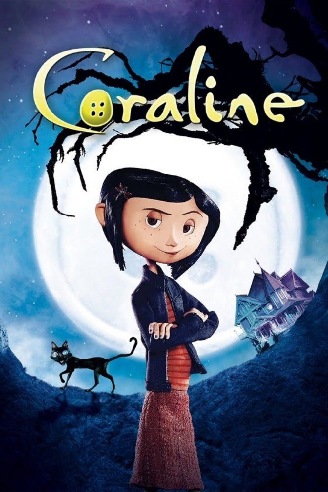

-
Eric Draven e sua noiva são brutalmente assassinados na Noite do Demônio (Devil's Night), a noite que precede o Halloween. Um ano depois, Eric volta do mundo dos mortos guiado por um corvo. Inicialmente sem lembranças do ocorrido, volta ao seu antigo loft onde recorda as memórias e a dor da morte. Eric pinta em seu rosto os traços de um palhaço feliz e distorcido e inicia uma caçada para vingar-se de seus assassinos. Os bandidos são mortos um a um, até que Eric, com o auxílio do sargento Albrecht, se encontra com o maior criminoso da cidade, Top Dollar e a sua irmã, que entretanto conseguiu apanhar o corvo. Ela descobriu que o sofrimento do corvo (pássaro) seria transposto para Eric, colocando assim a sua imortalidade em perigo. No final do filme Eric mata o Top Dollar que é o líder da gangue de assassinos e que também assassinou ele e sua noiva.
-
Jack Skellington (Chris Sarandon) é um ser fantástico que vive na Cidade do Halloween, um local cercado por criaturas fantásticas. Lá todos passam o ano organizando o Halloween do ano seguinte mas, após mais um Halloween, Jack se mostra cansado de fazer aquilo todos os anos. Assim ele deixa os limites da Cidade do Halloween e vagueia pela floresta. Por acaso acha alguns portais, sendo que cada um leva até um tipo festividade. Jack acaba atravessando o portal do Natal, onde vê demonstrações do espírito natalino. Ao retornar para a Cidade do Halloween, sem ter compreendido o que viu, ele começa a convencer os cidadãos a sequestrarem o Papai Noel (Edward Ivory) e fazerem seu próprio Natal. Apesar de argumentos fortes de sua leal namorada Sally (Catherine O'Hara) contra o projeto, o Papai Noel é capturado. Mas os fatos mostrarão que Sally estava totalmente certa.
-
Dr. Henry Frankenstein, um jovem e obstinado cientista, acompanhado do corcunda Fritz, seu leal assistente, vão a um cemitério e desenterram um cadáver para levarem-no ao laboratório num moinho abandonado onde ele guarda os corpos de mortos recentes. No caminho avistam o cadáver de um homem enforcado em uma árvore. O dr. Frankenstein, decidido a provar suas teorias de criar vida a partir dos mortos, constrói um corpo de partes de vários cadáveres que ele recolhe com a ajuda de Fritz. Quando só falta o cérebro para que seja finalizada a criatura, o doutor pede a Fritz que vá a uma faculdade e roube um. No entanto, o assistente acaba trazendo uma redoma com o cérebro de um assassino, sem que o doutor o saiba. Enquanto isso, a noiva, o pai e um amigo da faculdade se preocupam com a saúde de Frankenstein e contatam um antigo professor dele, que lhes conta as experiências proibidas que Frankenstein vinha realizando e que causaram a sua expulsão da faculdade. Eles vão até o laboratório de Frankenstein e chegam bem na hora em que a criação da vida vai ocorrer. O doutor ergue o corpo da criatura numa enorme plataforma suspensa, que recebe a energia de um relâmpago, chamado de "raio primordial" pelo cientista, que acredita que o segredo da vida encontra-se neste fenômeno que origina a eletricidade que existe no cérebro dos seres vivos. A experiência é um sucesso e a criatura vive. Mas logo aparecem os impulsos assassinos do cérebro revivido e a criatura começa a matar várias pessoas graças à sua imensa força.
-

Entediada em sua nova casa, Caroline Jones (Dakota Fanning) um dia encontra uma porta secreta. Através dela tem acesso a uma outra versão de sua própria vida, a qual aparentemente é bem parecida com a que leva. A diferença é que neste outro lado tudo parece ser melhor, inclusive as pessoas com quem convive. Caroline se empolga com a descoberta, mas logo descobre que há algo de errado quando seus pais alternativos tentam aprisioná-la neste novo mundo.
-
Situada em Cúmbria, numa mansão em ruínas duma região basicamente rural e montanhosa do norte da Inglaterra no começo do século XX, a jovem autora Edith Cushing apaixona-se e casa-se com Sir Thomas Sharpe, mas descobre que este não é quem parece ser. Sua casa abriga fantasmas, entidades misteriosas, que Thomas e sua irmã, Lady Lucille Sharpe, desesperada e ferozmente tentaram esconder.